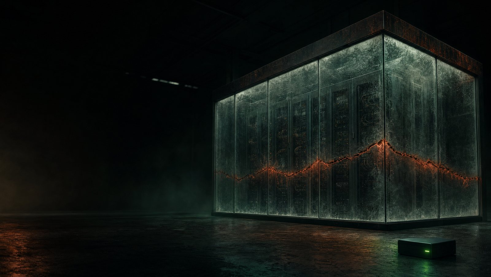
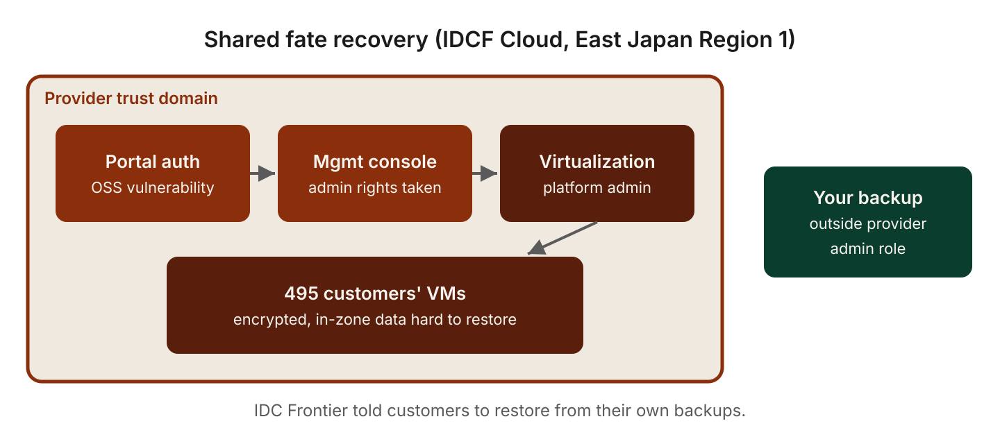

IDC Frontier Ransomware: Cloud Snapshots Were Inside the Blast Radius

At about 03:40 on 7 October 2026, ransomware hit IDC Frontier’s IDCF Cloud service in East Japan Region 1, affecting 495 companies and local governments. In its seventh notice on 27 October, IDC Frontier said the attacker exploited a vulnerability in open source software used by the IDCF Cloud portal’s authentication system, then went through the management console to take administrator rights over the virtualization platform and encrypt customer virtual servers. IDC Frontier has not named the component. Social media guesses about which project it was are guesses.

SoftBank Corp. CEO Junichi Miyakawa addressed the incident at the 9 November results briefing. According to Digital Today’s report, he apologized and said group security inspections would expand to cover open source software that had been outside prior checks. That admission matters more than most of the dramatic secondary commentary around Japan’s broader cyber news cycle.
Sysdig’s October 2026 briefing likewise frames the event as a SoftBank subsidiary cloud ransomware incident beginning 7 October with impact across hundreds of organizations.
What is solid vs what to leave out
Solid enough for defender writing:
- Date: 7 October 2026
- Provider: IDC Frontier / IDCF Cloud
- Impact scale: 495 companies and local governments, in four zones (tesla, henry, pascal, joule) of East Japan Region 1
- Entry per IDC Frontier: an unnamed open source component in the portal’s authentication system, then the management console, then virtualization admin rights
- Recovery: on 8 October IDC Frontier said data in the affected zones would be hard to extract or restore and that recovery would need customers’ own backups
- Data: no sign of exfiltration from virtual servers, but portal registration data for up to 71 companies was improperly viewed and up to four portal passwords were changed (27 October findings)
Leave out unverified ransom notes, hypervisor counts, and citizen record totals that circulate without a primary notice behind them. Attacker claims are not inventory.
The angle: shared fate recovery
In positional grappling, control of where you can stand up matters as much as the submission attempt. Cloud ransomware against a provider region is the same idea. If snapshots, management consoles, and virtualization control sit in the same trust domain as the workloads, customers discover they never had an independent stand up path.
IDC Frontier’s own notices show the shape. It cut the network and stopped systems in East Japan Region 1, then suspended the externally reachable management consoles in its other regions as a precaution. Then it told customers that data in the four zones would have to come back from their own backups. At least one prefecture reported it could not reach its backup data after the provider went down (MLex).
If your “backup strategy” is “the cloud button,” you are renting hope.
Defender actions for cloud customers
Before the next provider incident
- Maintain offline or cross account backups that the primary provider console cannot mass delete with one privileged identity
- Test restores to a second cloud or on prem landing zone quarterly
- Document break glass contacts that do not depend on the provider’s customer portal being healthy
- Know which workloads are irreplaceable in 24 hours vs rebuildable in a week
Identity and portal risk
IDC Frontier’s finding is a reminder that the customer portal is part of the attack surface for the fleet, not a boring billing website. Customers should:
- Use unique, phishing resistant auth where the provider offers it
- Limit portal admin seats
- Monitor for unexpected portal password changes and API token creation
- Segment automation identities that can stop or encrypt large sets of instances
Detection from the customer side
You may not see the provider’s hypervisor layer. You can still watch:
- Mass instance stop or unreachable events across an availability set
- Sudden loss of management API access
- Unexpected snapshot deletions
- Ransom notes on attached volumes or in instance console output
- Cross account role anomalies if you use organization level access into the provider
Defender actions for cloud operators
If you run multi tenant infrastructure:
- Inventory open source auth components with the same seriousness as first party code
- Separate backup storage control planes from production virtualization admin
- Require dual control for mass snapshot deletion
- Practice regional isolation drills that assume portal compromise
- Publish customer facing integrity status that distinguishes “workloads down” from “backups verified intact”
The response direction SoftBank described, expanding OSS inspection and automating more vulnerability diagnosis, is the minimum lesson. Shared hosting of recovery copies without hard isolation is the expensive lesson.
How to brief executives without mythology
Skip attacker mythology and speculation about tools. IDC Frontier attributed a concrete class of failure: open source in portal authentication that led to platform admin rights, plus cascading customer impact in a cloud region. The business question is whether your critical workloads have recovery paths that survive provider console loss.
Contract and assurance questions worth sending
Send these to cloud and hosting providers before you need them:
- Can a single compromised portal identity delete or encrypt snapshots across a region?
- Are backup control planes in a separate trust boundary from compute admin?
- What is the customer notification SLA for ransomware versus generic outage?
- Do you inventory and patch open source components in authentication the same way you patch first party services?
IDC Frontier’s own findings show the gap was real for them. Your provider answers will tell you whether you are buying compute or buying shared fate.
Checklist
- Identify workloads that cannot tolerate provider region ransomware
- Verify backups that are immutable to the primary provider admin role
- Test a restore that does not use the primary customer portal
- Review portal admin count and MFA strength
- Ask providers how snapshot deletion is authorized and logged
- Add OSS auth components to your own SBOM and scan scope where you operate platforms
Provider ransomware turns customer security into a dependency graph problem. Draw the graph now, while your snapshots still open.
Sources
- Impress Watch: IDCF Cloud outage caused by ransomware, 495 companies and local governments affected (8 Oct)
- BleepingComputer: ransomware attack disrupts Japan's IDCF Cloud used by government clients
- ITmedia @IT: some customer data hard to recover (9 Oct)
- ITmedia @IT: full picture of the IDCF ransomware attack, OSS vulnerability exploited (29 Oct)
- MLex: Japan cloud ransomware attack exposes municipal backup vulnerabilities
- SoftBank Corp.: Q2 FY2026 results briefing summary (9 Nov)
- Digital Today: SoftBank tightens security response
- Sysdig: security briefing, October 2026